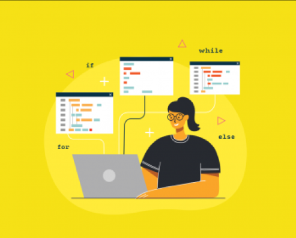
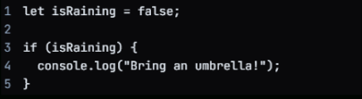
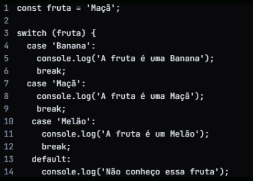

Não deixe ninguém lhe dizer que você não pode aprender JavaScript. Com muito trabalho e dedicação, você pode dominá-lo e alcançar seus objetivos!

Estruturas condicionais
Em JavaScript, estruturas condicionais são usadas para executar diferentes blocos de código com base no fato de uma determinada condição ser verdadeira ou falsa. Em resumo é uma estrutura de domada de decisões, temos duas estruturas condicionais que são muito importante: IF e SWITCH.
IF
IF é uma instrução usada em JavaScript para executar um bloco de código somente se uma determinada condição for verdadeira. Aqui está um exemplo:

Neste exemplo, definimos uma variável isRaininge com valor como false. Em seguida, usamos um IF para verificar se isRainingis é verdade. Se for, registramos a mensagem “Traga um guarda-chuva!” para o console. Neste caso, como isRainingis é false, então o código dentro do bloco não é executado.
SWITCH
Uma condicional estrutural switchem JavaScript é usada para testar a igualdade de uma expressão com um valor especificado em cada case, e executar as instruções correspondentes se houver uma correspondência.
Aqui está um exemplo simples de como usar ou switchem JavaScript:
